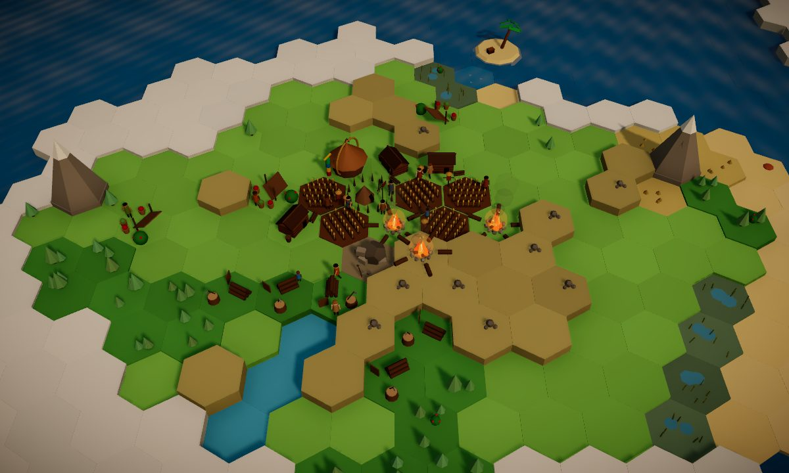
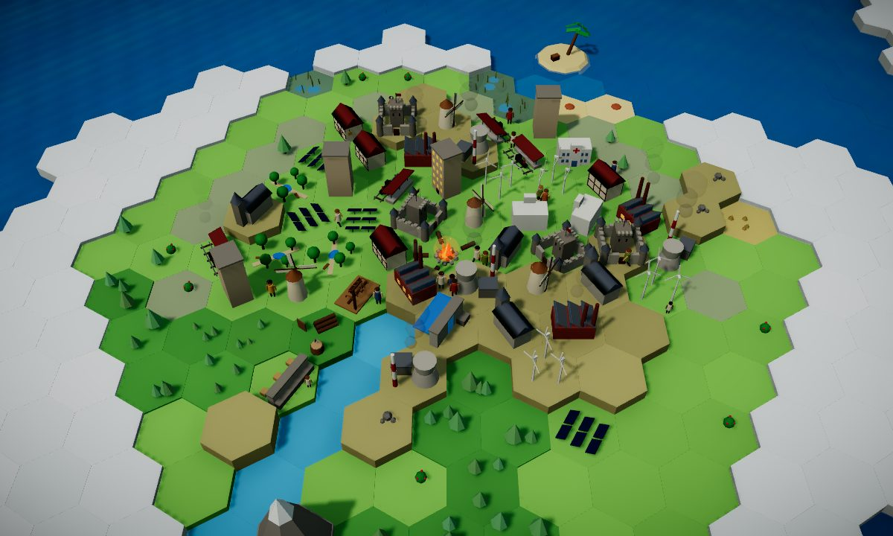
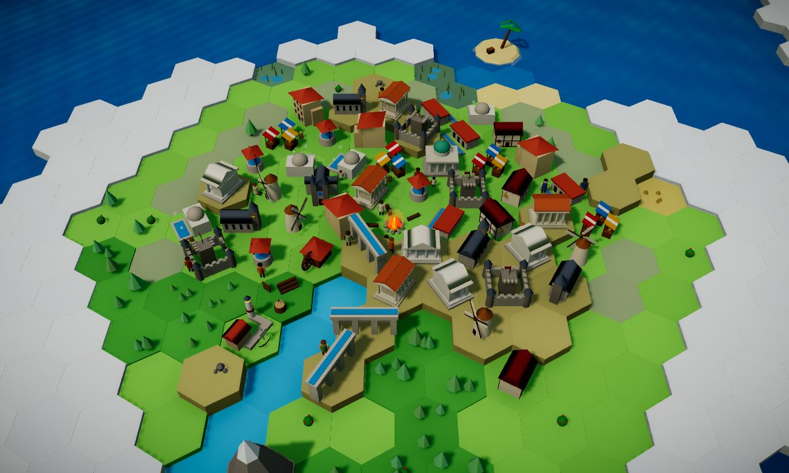
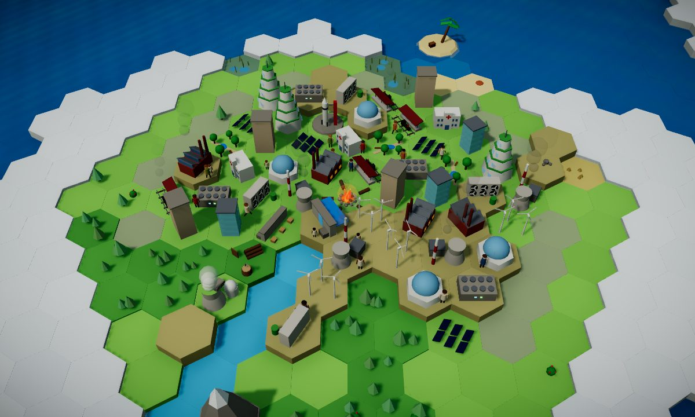
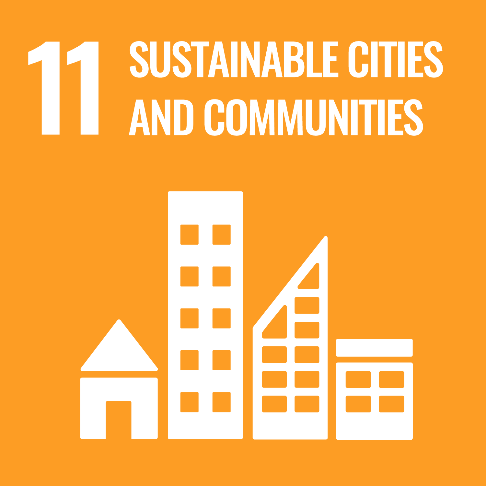
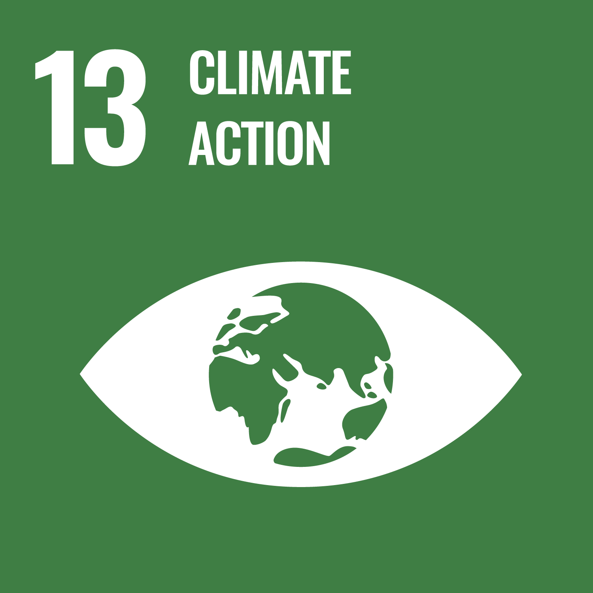
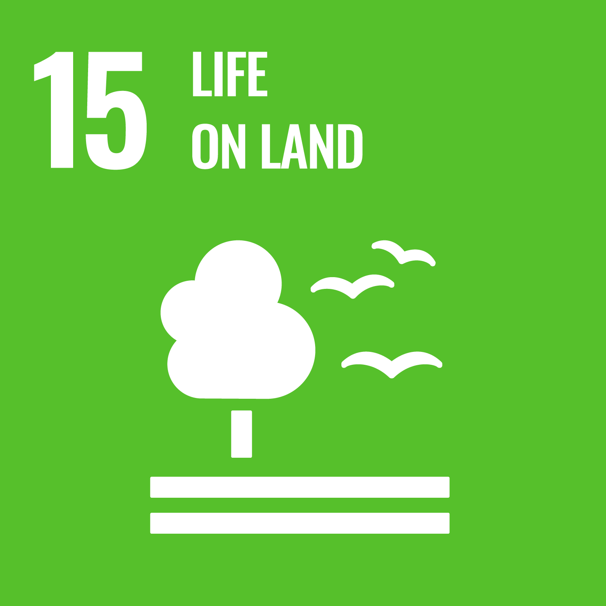
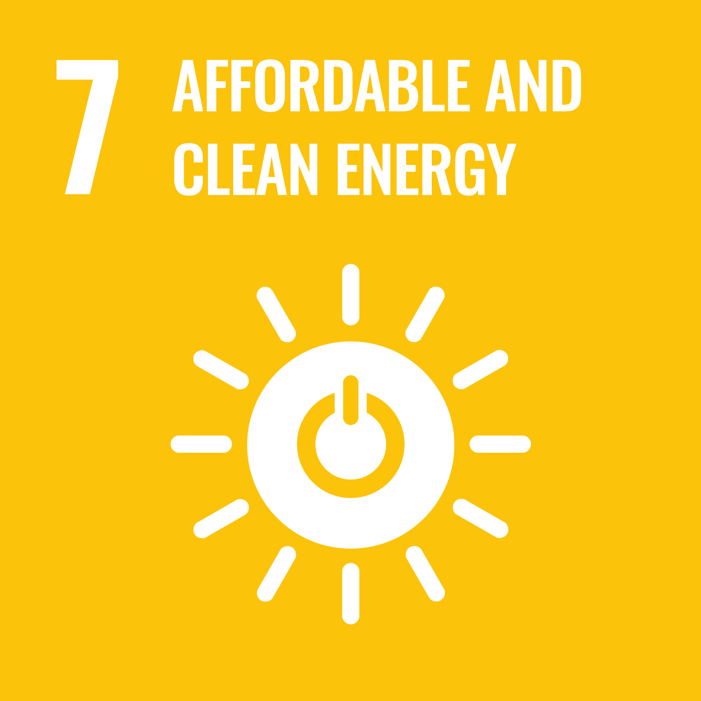

SHISTECH · Hacktrack · SDG 11
 Emberline
Emberline
A sustainability trade-off game
Build and guide a civilization through different eras and challenges. Balance the needs of your people with the health of the land: every home, farm and power plant brings a benefit and a cost. Can your society grow and still last?
Play nowTwo ways to play: from the Stone Age, or Build to Last from 1850.
Runs in the browser, on a laptop or a phone.
Two ways to play
A long journey through the ages, or a shorter race against the smoke.


Build a civilization that lasts
Different eras and challenges. Every choice leaves a mark on the land.


Every choice is a trade-off
Most builders reward you for building as much as you can. Emberline shows you the price.
+Wood for fires and building
 Fells the trees around it; the forest takes a long time to grow back
Fells the trees around it; the forest takes a long time to grow back
+Warmth for 10 people, light, cooked food
 Burns wood, adds smoke, and can start a wildfire in nearby trees
Burns wood, adds smoke, and can start a wildfire in nearby trees
+Lots of steady food
 Clears the nearest patch of forest for good, and fewer trees means less rain for every field
Clears the nearest patch of forest for good, and fewer trees means less rain for every field
+A little food; with Warm Clothes researched, clothing for 10 people so they need no fire
 Grazing animals wear down the grass around them
Grazing animals wear down the grass around them
+Stone for better buildings
 Cuts the hill down for good, and its dust covers crops and berries within 2 tiles (40% less food)
Cuts the hill down for good, and its dust covers crops and berries within 2 tiles (40% less food)
How the game teaches
Every building shows what you get and what the land pays, right where you place it.
Forests turn to stumps and bare earth, smoke rises over the fires, the deer disappear. Click the Sustainability meter to see exactly why.
Elder Ama explains each lesson as it happens, and every event card links your choice to the real world and a UN target.
How it connects to the UN SDGs

The core of the game: grow a settlement that can last. Shelter, crowding, clean water, planning and pollution all matter.

Smoke and coal raise the carbon in the air. In the last era you must bring it back down before the climate tips for good.

Sustainability measures the forest left standing. Clear-cut it and the deer vanish and the land wears out; restore it by planting.

From campfires to coal plants to wind, sun and water: every kind of power has a price, and clean power is how the last era is won.
Official SDG icons from the United Nations Sustainable Development Goals. This project has not been approved by the United Nations and does not reflect its views or those of its officials or Member States.